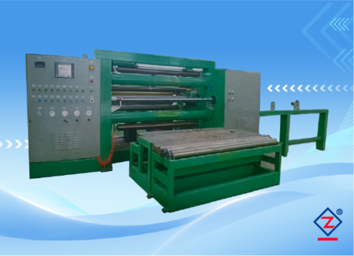
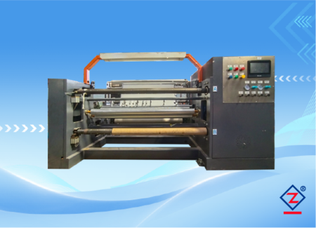

Cuộn thành phẩm
Thu cuộn đều, mép cuộn ổn định
Cần xác nhận đường kính cuộn, lõi giấy, trọng lượng cuộn, độ lệch mép và tốc độ tuyến thực tế.
Xem thông tin cần gửiThiết bị thu cuộn cho màng PVC mềm/cứng, da nhân tạo và vật liệu trang trí dạng cuộn cần lực căng ổn định, mép cuộn đều và thao tác bốc dỡ thuận tiện.

Máy cuộn trung tâm phù hợp khi dây chuyền cần thu vật liệu sau in, phủ, ghép, sấy hoặc xử lý bề mặt. Với màng PVC và vật liệu mềm dạng cuộn, chất lượng cuộn thành phẩm phụ thuộc nhiều vào lực căng, đường kính cuộn, lõi giấy và cách bốc dỡ.
| Vật liệu thu cuộn | PVC, màng mềm, màng cứng, da nhân tạo, màng trang trí. |
|---|---|
| Sản phẩm đầu ra | Cuộn màng PVC, cuộn vật liệu trang trí, cuộn da nhân tạo hoặc cuộn bán thành phẩm trước khi xẻ. |
| Khổ thu cuộn | 600 - 3000 mm |
| Tốc độ thu cuộn | Tối đa 350 m/phút |
| Độ dày vật liệu | 0,03 - 0,8 mm |
| Điều khiển lực căng | Tự động |
| Nguồn điện | 380 V + N, 50 Hz |
| Tổng công suất | 30 kW |
| Điều khiển trung tâm | Toàn tuyến sử dụng PLC trung tâm. |
|---|---|
| HMI | Màn hình người-máy dùng để thao tác và hiển thị trạng thái. |
| Đồng bộ | Điều khiển đồng bộ biến tần kỹ thuật số. |
| Servo | Điều khiển servo hiệu suất cao. |
| Thu cuộn | Trục khí tự động rút/đưa trục, có dao cắt tự động. |
| Bốc dỡ thành phẩm | Bàn thành phẩm tự động lên/xuống liệu. |
| Ứng dụng trong dây chuyền | Có thể bố trí sau công đoạn in, phủ, ghép, sấy hoặc trước công đoạn xẻ cuộn, tùy quy trình nhà máy. |
Nếu cuộn bị lệch mép, quá chặt, quá lỏng hoặc khó bốc dỡ, công đoạn đóng gói và xẻ cuộn phía sau sẽ bị ảnh hưởng.
Cần xác nhận đường kính cuộn, lõi giấy, trọng lượng cuộn, độ lệch mép và tốc độ tuyến thực tế.
Xem thông tin cần gửi
Máy cuộn cần đồng bộ với tốc độ tuyến, tín hiệu điều khiển và lực căng của công đoạn trước.
Xem giải pháp màng PVC
Cuộn bán thành phẩm ổn định giúp công đoạn xẻ giảm lệch, nhăn và lỗi mép cắt.
Xem máy xẻ cuộnMáy phù hợp khi dây chuyền cần thu cuộn ổn định ở tốc độ cao, đặc biệt với màng PVC, màng mềm/cứng, da nhân tạo hoặc vật liệu trang trí cần giữ độ phẳng và lực căng đều.
Cần. Đường kính cuộn đầu vào, cuộn thành phẩm, lõi giấy, trọng lượng cuộn và cách bốc dỡ sẽ ảnh hưởng đến trục khí, bàn nâng và bố trí máy.
Có thể tư vấn theo dây chuyền hiện tại, nhưng cần biết tốc độ tuyến, tín hiệu điều khiển, khổ vật liệu, vị trí lắp đặt và công đoạn trước/sau máy cuộn.
Nên gửi vật liệu, khổ rộng, độ dày, tốc độ, đường kính cuộn, trọng lượng cuộn, lõi giấy, công đoạn trước/sau và hình ảnh dây chuyền hiện tại nếu có.
| Vật liệu | Cho biết loại vật liệu chính, ví dụ PVC mềm/cứng, da nhân tạo, màng trang trí hoặc vật liệu dạng cuộn khác. |
|---|---|
| Khổ rộng và độ dày | Gửi khổ vật liệu đầu vào, độ dày và yêu cầu bề mặt sau khi thu cuộn. |
| Đường kính cuộn | Gửi đường kính cuộn đầu vào, đường kính cuộn thành phẩm, lõi giấy và trọng lượng cuộn. |
| Tốc độ mong muốn | Nêu tốc độ sản xuất dự kiến hoặc tốc độ tuyến hiện tại. |
| Vị trí trong dây chuyền | Cho biết máy đặt sau in, phủ, ghép, sấy hay trước công đoạn xẻ cuộn. |
| Yêu cầu nhà máy | Nguồn điện, không gian lắp đặt, phương thức bốc dỡ cuộn và yêu cầu tự động hóa. |